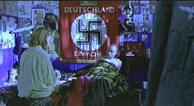

| Romper Stomper (SE)/B,B+ |
| Fox/1992/93/ANA 1.85 |
It's skinheads versus the
world Down Under. Romper Stomper, a demented, violent film is
photographed in extremely hostile kinetic style. Brutality is unrelenting, the violence shockingly
ugly . Make no mistake: this is very frightening material from Australian writer/director Geoffrey
Wright.
Romper Stomper pits an Aussie gang of
toughs against immigrant Vietnamese youths. Do the gangs form as protection against a hostile
environment? I am not sure what to make of Romper Stomper. Is this a warning call about
today's disaffected youth? There are no redeeming characters in Wright's ugly picture; just an
array of pathetic, abused, damaged and deranged young folks colliding in a horrifying universe.
 |
| The haute skinhead decor. ©Fox |
Hando is the leader of an ethnocentric neo Nazi gang living in
Melbourne. Whether cozied away in their warehouse digs or roaming the streets in search of trouble,
violence is second nature to these youths. An improbable love triangle erupts amidst the violence
when Gabe, a disaffected rich girl falls in with the gang. Davey, worshipping Hando's every kick,
falls hard for Gabe as he watches Hando bed the girl and ultimately throw her over. Davey, the
"sensitive" skinhead, agonizes over his choices: stomp on immigrants in a blood ritual of
the brotherhood or break the mold and give in to his romantic pining.
Painted in blood red strokes, Romper Stomper is one of the most
horrifying gang canvases ever captured on film. Fueled by a vision of hate and fear these
kids will surely become the motorcycle madmen of George Miller's dark apocalyptic
road movies, Mad Max and The Road Warrior. When the toughs slip there way into
a rich man's home, you can't help think of Stanley Kubrick's A Clockwork Orange, but
Wright's vision is without the horrifying humor of that brilliant film.
Russell Crowe etches a brutal screen portrait of Hando. Crowe's facial
muscles are frozen in a vicious snarl. His eyes are reflect the violence and inhumanity of his
character. Crowe combines powerful physical presence with an underlying intelligence. In Romper
Stomper, beneath the tattooed skinhead is a prancing, pacing animal. Like a panther poised to
pounce, Hando is all ferocity and no beauty. Daniel Pollack is effective as Davey and Jacqueline
Mackenzie gives Gabe a sad desperation.
The music and sound are appallingly loud and
even the editing emphasizes this coldhearted viciousness. Production design is very
spare.
As Romper Stomper opens on a dark street, I was astounded by
the penetrating clarity of the image. Deep blacks shine in the Australian nights. Leather jackets
catch highlights of night light. The reference level is not quite realized over the entire DVD.
Some slight edge enhancement creeps in to high transition compositions. The color is very good.
Blood or Nazi paraphernalia is richly saturated. Shadow detail is excellent. Contrast and
brightness levels help delivers the sharp images with ferocious accuracy. The DTS mix seems a bit
bright and over emphasized. It's crystal clean. You need that clarity to understand all the
dialogue. The accents are almost tough enough to employ use of the English subtitles. Not quite a
cockney horror. Another case where you best lower your audio setting a good five decibels before
sitting down to listen to the DTS track in the home theater.
Fox delivers Romper Stomper as a two disc special edition. Director
Geoffrey Wright offers his observations in audio commentary on one disc, while disc two has new
interviews with Wright examining the film. Also included are 1992 interviews with Wright, stars
Russell Crowe, Jacqueline Mackenzie and Tony Lee. There's a very fine demo comparison of the
cropped and color uncorrected of the original video release and this new special edition. Side by
side comparisons are terrific.

Selections from the feature archive include articles on
Akira Kurosawa, Frank
Darabont, Blonde Bimbos, Hollywood Street Gangs, or Vietnam: The
Hollywood Pariah, and many more....
Movie Rage: Death in the Aisles
Everyone knows what it feels like to get angry at the
movies these days. Here's a humorous but not so delightful view of big screen misery.


DVDPlanet is the DVD
incarnation of legendary laser retailer Ken Crane's. Deep discounts and serious service.
 Brad Lang continues to add more interesting material to the extensive
collection at Classic
Movies. Everything from actors and actress to your favorite directors is
linked at the site.
Brad Lang continues to add more interesting material to the extensive
collection at Classic
Movies. Everything from actors and actress to your favorite directors is
linked at the site.

News, information, features about current films in theaters and in the
pipeline. Easy to use interface.

The DVD Forum is an international association of hardware
manufacturers, software firms and other users of Digital Versatile Discs (the "DVD
Format"), created for the purpose of exchanging and disseminating ideas and information about
the DVD Format and its technical capabilities, improvements and innovations.

The Movie Poster Archive includes extensive poster images from the films of stars like Susan Hayward, Kirk Douglas, Katharine Hepburn and many more. Our featured star is Doris Day.